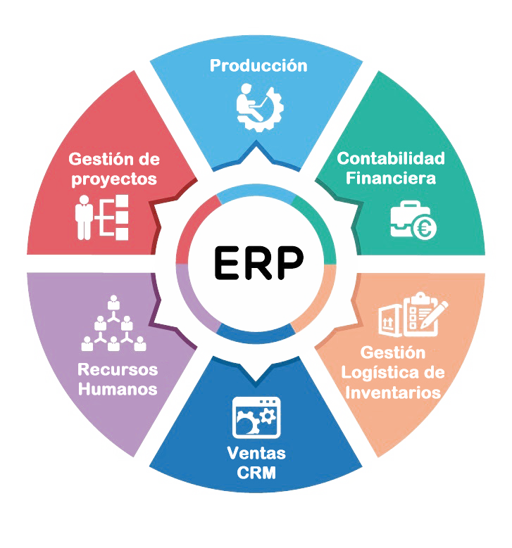

Sistemas de gestión de información (ERP)
¿Qué son los ERP?
Los ERP, son sistemas de gestión de información que se caracterizan
por ser una aplicación en la que hay varias partes integradas. Estas
partes son de diferente uso, por ejemplo: producción, ventas, compras, pedidos, nóminas, etc.
Tienen como objetivo
Ser un programa con acceso a una base de datos. Sus componentes interactúan entre sí.
Los datos deben ser consistentes, completos.

ERP vs Suite
Una suite empresarial es un conjunto de aplicaciones de software integradas que se utilizan para cubrir múltiples
funciones empresariales. Un ERP, por otro lado, es un tipo de suite empresarial específico que se enfoca en la planificación de recursos empresariales.
Hay muchos fabricantes de software ERP en el mercado, cada uno con sus propias características y ventajas. Aquí hay algunos ejemplos de fabricantes de ERP:
-
SAP: Uno de los fabricantes de software ERP más grandes y conocidos del mundo,
SAP ofrece soluciones ERP para empresas de todos los tamaños y en todas las industrias.
-
Oracle: Otro fabricante de software ERP líder, Oracle ofrece una amplia gama de soluciones empresariales, incluyendo ERP, CRM y gestión de la cadena de suministro.
-
Microsoft: Con su producto Dynamics 365, Microsoft ofrece una solución de software ERP escalable y flexible para empresas de todos los tamaños.
-
Infor: es un proveedor de software ERP enfocado en la industria, ofreciendo soluciones específicas para sectores como la fabricación, la distribución y la gestión hotelera.
En cuanto a alternativas gratuitas de ERP, hay algunas opciones disponibles, aunque es importante tener en cuenta que estas soluciones pueden no tener todas las características y funcionalidades de las soluciones comerciales. Aquí hay algunos ejemplos:
-
Odoo: Es una suite de software empresarial de código abierto que ofrece una amplia gama de aplicaciones empresariales, incluyendo ERP, CRM, gestión de inventarios y más.
-
ERPNext: Es una solución ERP de código abierto que ofrece funcionalidades como gestión de ventas, compras, inventario, finanzas y recursos humanos.
-
Dolibarr: Es un software ERP y CRM de código abierto que ofrece funcionalidades para la gestión de ventas, compras, proyectos, inventarios y más.